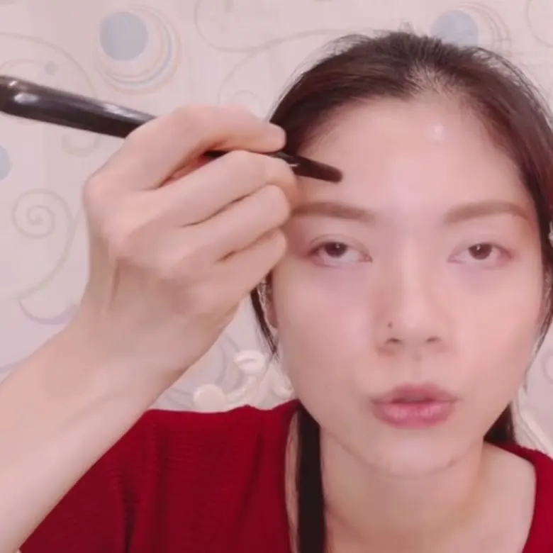

The Bojin Journal · The method
Do Both Sides of Your Face Need Equal Time?

A student once set a timer on her phone, determined to give each side of her face exactly ninety seconds, not a moment more or less. She told me this proudly, like she'd found the fair way to do it. I had to tell her that the fair way and the equal way aren't the same thing. Her left jaw held noticeably more tension than her right, every single session, and matching the clock instead of matching the tension meant her tighter side never got what it actually needed.
So here's the idea before the detail: equal time sounds fair, but it treats two different situations as if they were the same one. Most faces hold more tension on one side than the other. Giving both sides the same number of minutes regardless of what you find there isn't balance. Giving the tighter side a little more, and the calmer side a little less, is.
Why sides are rarely identical in the first place
Chewing more on one side, sleeping with one cheek pressed into a pillow, carrying a bag on the same shoulder for years, even favoring one side when you're on the phone: small daily habits with names, not something wrong with your face. I've written about where that unevenness comes from in more depth elsewhere. What matters for a session is simpler: if one side is already carrying more tension going in, treating both sides identically just maintains that gap instead of narrowing it.
What "matching the need" actually looks like
This isn't about guessing. Work both sides the same way for the first couple of passes, same pressure, same angle, same speed, and pay attention to what comes back. The side that feels tighter under the tool, takes a little longer to soften, or is more tender to a light touch is telling you it could use more of your time today. That's your answer, not a stopwatch.
You're not adding anything new to the tighter side by spending more time there. You're easing tension that already exists unevenly, which brings that side closer to matching the calmer one, not further from it. A timer that insists on equal minutes actively works against that goal.
Check both sides before you decide how to split your time
Use a little oil or your usual moisturizer, and try this at the start of your next session.
- Work both sides the same way, briefly Give each side two or three identical warming passes along the jaw, using the same pressure and angle on both.
- Compare what you felt Notice which side felt tighter, more tender, or slower to soften. That side is asking for more of your time today.
- Give the tighter side a few extra minutes Spend a little longer on the side that needed it, then finish both sides down the neck as usual.
Some days the two sides will feel nearly the same, and an even split is exactly right. Other days one side will clearly need more. The habit worth building isn't a fixed rule either way; it's checking in each time rather than assuming.
It can change, so keep checking
The side that needs more attention today isn't necessarily the side that needed it last month. If the habit behind the imbalance shifts, which shoulder carries your bag, which side you favor when you're tired, the tighter side can shift with it. Treat every session as a fresh check-in rather than carrying forward an old assumption about which side is "the tight one."
An honest note
Matching your time to what each side needs won't erase asymmetry that comes from bone or long-standing structure; that was never on the table. What it can do is stop a small, tension-driven gap between two sides from being maintained by a routine that never noticed it was there. The effect stays gentle and temporary, and builds with the same honest attention each time.
Put the stopwatch away. Your hands, checking in on both sides before you decide, will always be a better guide than a fixed number of minutes.
Quick answers
Should I spend the same amount of time on both sides of my face?
Not necessarily. Most faces hold more tension on one side than the other, so the tighter side often benefits from a little more time and the calmer side from a little less. Matching your time to what each side actually needs works better than splitting every session exactly in half.
How do I know which side needs more time?
Work each side the same way for the first few passes and pay attention to what you feel. The side that's more tender, feels tighter under the tool, or takes longer to soften is the one that could use a few extra minutes that day.
Will working one side more create new asymmetry?
No. You're easing tension that already exists unevenly, not adding anything new to either side. Giving the tighter side more attention brings it closer to matching the calmer one, not further from it.
Does the tighter side ever switch over time?
It can, especially if the habits behind it change, like which side you favor when chewing or which shoulder carries a bag. Check in with both sides each session rather than assuming one side will always be the tighter one.
Learn to read both sides quickly
Comparing left and right takes seconds once you know what to feel for. My free 3-minute video shows how to check both sides before deciding where your time is best spent.
Watch the free 3-min videoYu-Ting Lan is a Taiwan-based international bojin instructor and the founder of Héhé Studio. She has taught her bojin method to more than a thousand students, from complete beginners to grandmothers, across Taiwan, Hong Kong, and Malaysia.